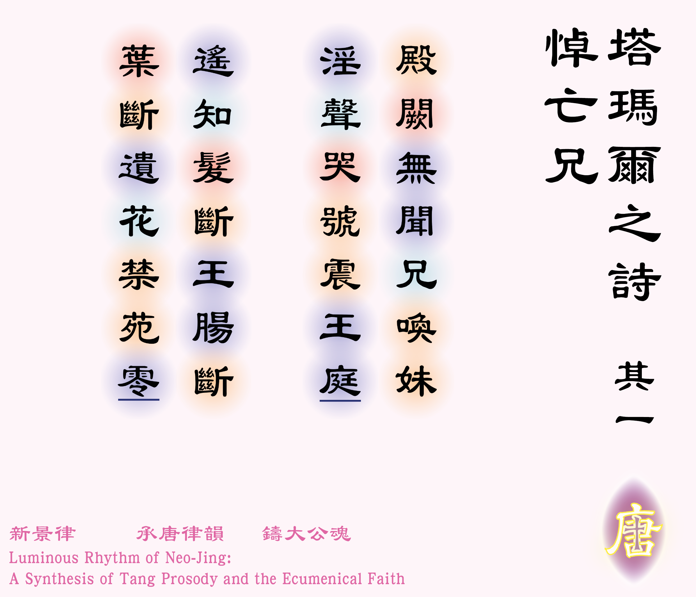

![[如果未顯示圖片，請確認 圖例_2-01.jpg 已放入同資料夾]](圖例_2-01.png)

殿闕無聞兄喚妹 [1]此兩句描寫塔瑪爾聞道哥哥阿貝沙隆返回耶路撒冷，並耳聽哥哥淫辱父王的妃嬪。見〈撒慕爾紀下16:15-23〉。，
淫聲哭號震王庭 [1]此兩句描寫塔瑪爾聞道哥哥阿貝沙隆返回耶路撒冷，並耳聽哥哥淫辱父王的妃嬪。見〈撒慕爾紀下16:15-23〉。。
遙知髮斷王腸斷 [2]* 髮斷：阿貝沙隆以俊美見稱，特別是其頭髮，但卻在戰事中頭髮被叢林裡的樹枝纏着，被約阿布擊殺，見〈撒慕爾紀下14:25-26〉；
** 王腸斷：阿貝沙隆死後，達味傷心至極，見〈撒慕爾紀下19：1〉。，
葉斷遺花禁苑零 [3]* 塔瑪爾在被阿默農強姦後，一直住在哥哥的府邸裡，憂悶不樂地渡日，見〈撒慕爾紀下13:20〉；
** 禁苑：皇宮；
*** 零：凋落。。
體裁：七言絕句（仄起首句不入韻式）
韻部：平水韻．九青
創作日期：二零二六年六月二十四日
| Poetic Verse (Rhymed & Metrical) | Close Literal Translation | |
|---|---|---|
| 1 | No voice of yours, dear brother, calls my name through palace halls, | Within the palace halls, no more is heard the brother calling his sister, |
| 2 | While cries of lust and weeping shock the royal courtyard walls. | While the sounds of lust and weeping shake the royal court. |
| 3 | From far I know your hair was caught, the King’s heart torn in twain, | From afar I know your hair was severed, and the King's heart was broken, |
| 4 | The leaf is severed; this lost flower fades in the barren reign. | The leaf is cut down; the abandoned flower withers away in the forbidden gardens. |
When reading 2 Samuel, I could not help but wonder: what kind of devastating impact did the death of Absalom have on his sister, Tamar? Furthermore, as a victim of sexual assault herself, was she also a firsthand witness to the moment her brother defiled their father’s concubines? What could possibly have been going through her mind?
When Absalom died, what did his sister Tamar feel? After all, in the entire narrative of the Bible, her brother Absalom was the only person who ever truly cared for her and stood up on her behalf.
***English version is translated by Google AI.